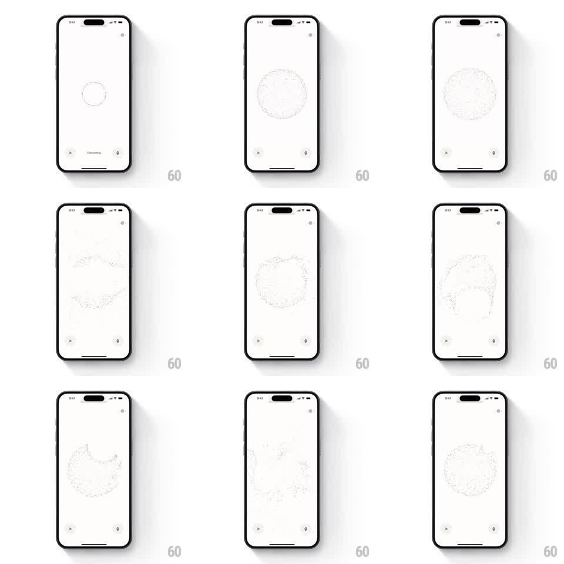

Media
Frame-by-frame

Rebuild this interaction 1:1: Perplexity's voice orb - a thin circle that blossoms into a 3D particle-dot sphere and flows through organic shapes while the voice session listens and responds.

Rebuild this interaction 1:1: Perplexity's voice orb - a thin circle that blossoms into a 3D particle-dot sphere and flows through organic shapes while the voice session listens and responds. ## Integration Integration: stack-agnostic spec - springs given as stiffness/damping, timed motions as duration + curve; map every value to your framework and animation library of choice. ## Scene Minimal white voice screen: a centered form made of fine dark dots, a close X bottom-left, a mic button bottom-right, and a small "Connecting" label under the form at start. The dot form idles as a sphere and morphs into flowing organic shapes (wave bands, blobs, off-center clusters) as the session state changes. ## Motion spec Pattern: state-driven 3D particle form morphing. - Connecting: a thin circular outline (2pt stroke) rotates slowly (6s/rev) with the "Connecting" label pulsing (opacity 0.4 -> 1, 1.2s). - Connected: the circle bursts into ~1,500 dots that settle into a sphere (dots fly outward with spring ~200/18, staggered by angle over 600ms); the label fades away. - Listening: the sphere breathes (radius +-6%, 2.4s) and its dots ripple in waves traveling pole to pole. - Speaking/thinking: the sphere morphs continuously between organic shapes - wave sheets, pinched blobs, rings - each morph 1.2-2s with smooth noise-driven interpolation; dot density stays constant (no popping). - The whole form reacts to audio level: amplitude scales ripple height 1x-1.8x in real time (smoothed 80ms). - Ending: dots collapse back to the thin circle (500ms, reverse stagger) and fade. ## Calibration - Dots are tiny (1.5-2.5pt) and dark gray on white - the form reads through density, not size. - Morphs never stop moving: even idle breathing keeps every dot in motion. ## Reduced motion A single slowly breathing sphere; state changes shown by color only. ## Don't miss - The circle-to-sphere burst is the signature moment - it must feel like the outline comes apart into particles. - Controls (X, mic) stay static; all life is in the center form.